Werken
Op volgende pagina’s zijn werken uit verschillende genres en in verschillende technieken voorgesteld. De meerderheid ervan werd gemaakt op bestelling.
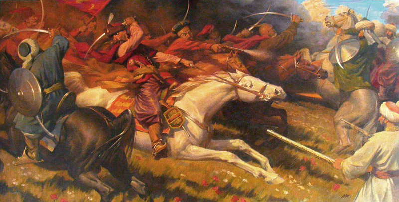
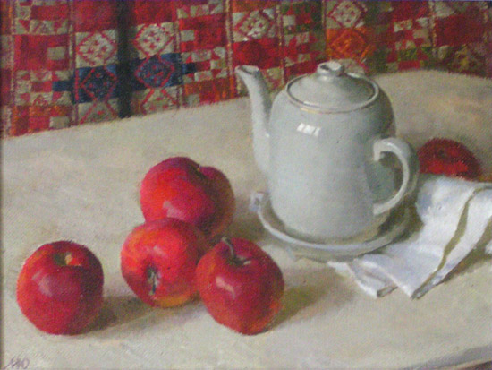
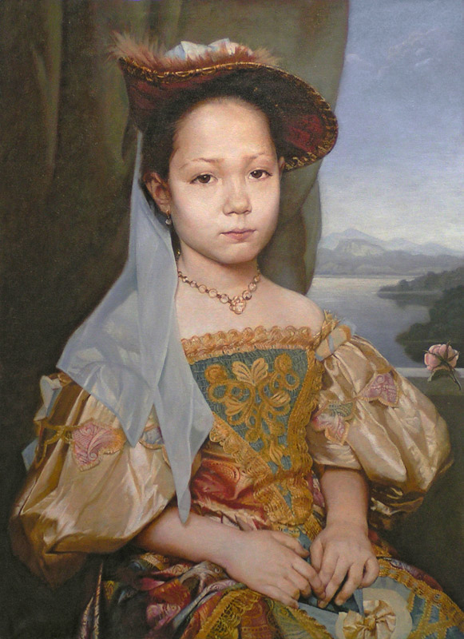
Portret van meisje op foto.
doek, olieverf (1000х800)
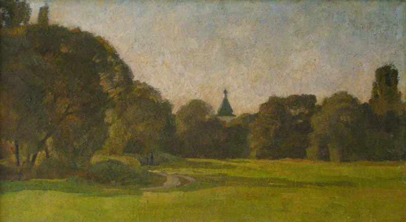
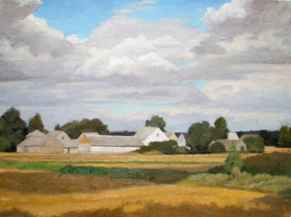
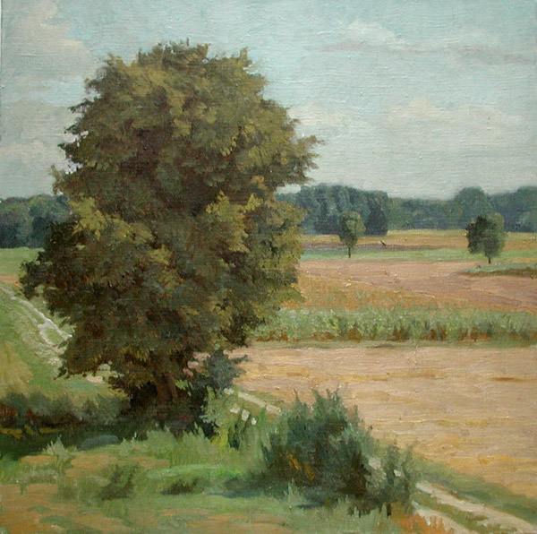
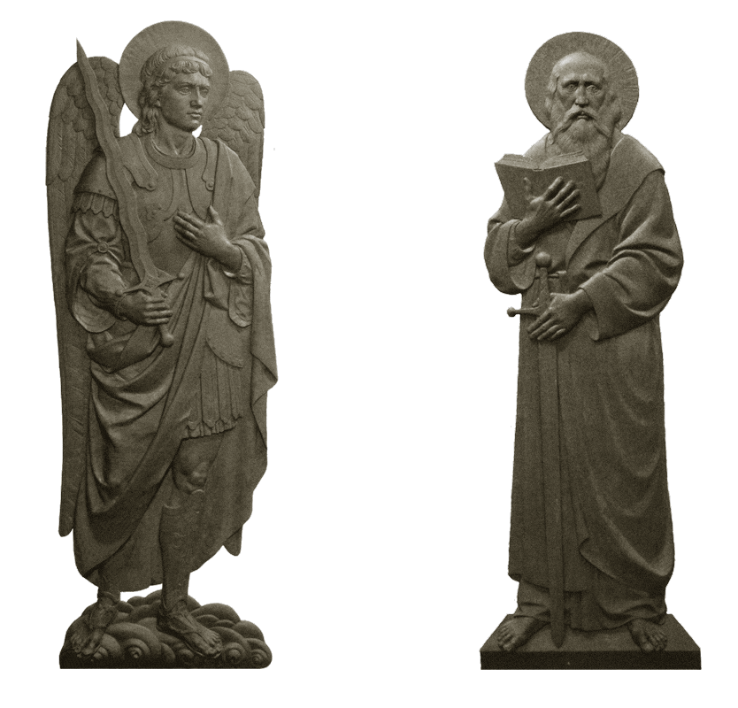
Modellen uit gegoten brons.
was (1800х600)
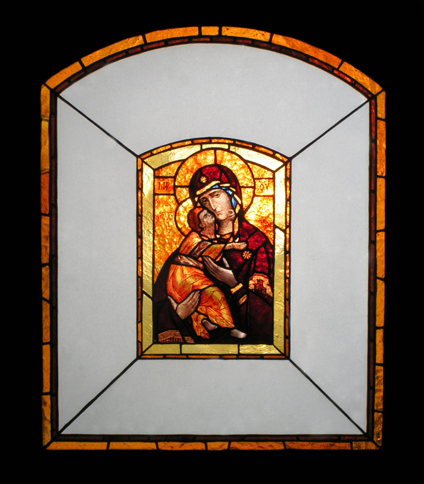
Icoon van de Moeder Gods uit Vysjgorod – miniatuur in Tiffani-techniek.
glasraam (500х400)
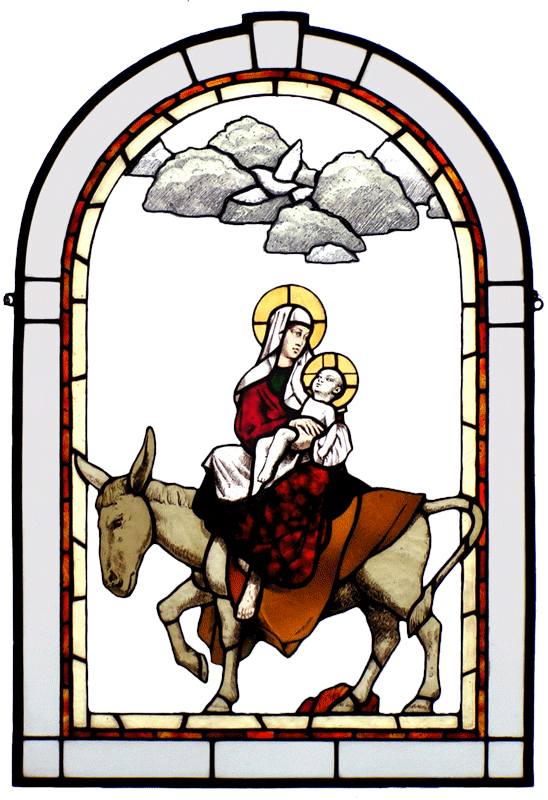
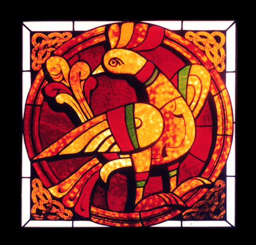
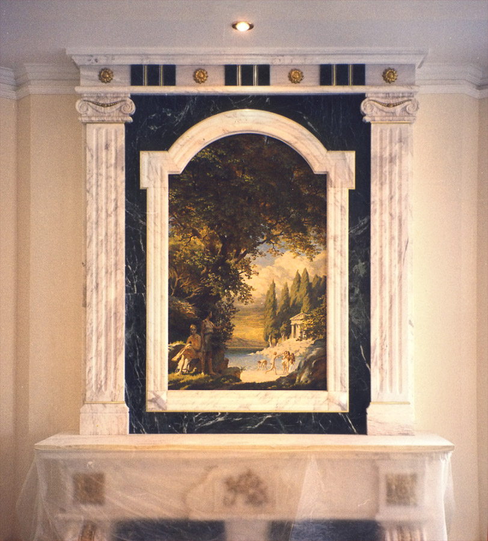
Marmeren schouw van de firma “Obelisk”, schilderij van de kunstenaar.
olieverf (1100х700)
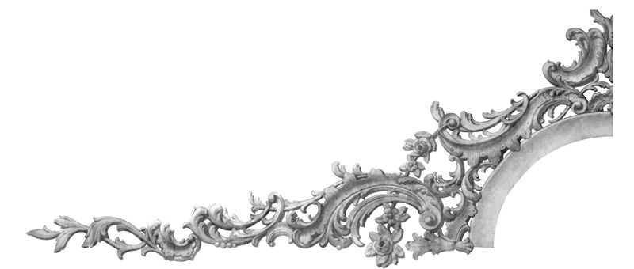
Karton op ware grootte voor pleisterwerk.
papier, potlood (1300х600)
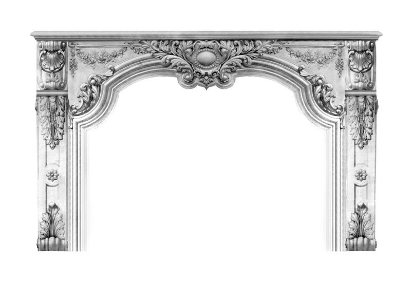
Karton op ware grootte voor snijwerk in marmer.
papier, potlood (2000х1500)
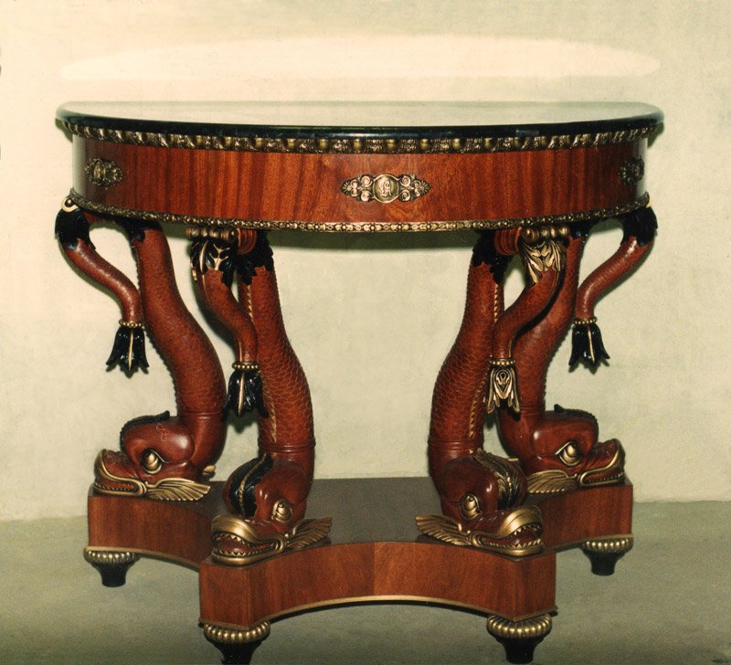
Console, repliek van Franse empire (samen met M. Nikolaev).
houtsnijwerk, steen, brons (1500х1200)
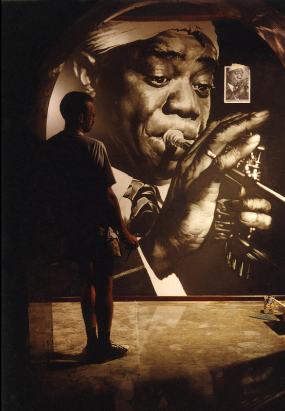
Portret van Louis Armstrong in jazz-restaurant Swing.
Geschilderd naar foto, verkregen van de eigenaar van het restaurant.
Schilderij, acriel (3000х2000)